東京大学 1995年 理科 第6問
問題
原点をOとするx y平面上の双曲線
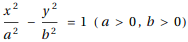
上の点Pにおける接線と2つの漸近線との交点をQ、Rとする。このとき以下の問いに答えよ。
(1) 三角形OQRの面積Sは、点Pのとり方にはよらず、a,bによって定まることを示せ。
(2) 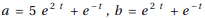として実数tを変化させるときのSの最小値を求めよ。
解答
(1)
x=0について対称なので、x>0の部分だけを考える。
双曲線の方程式を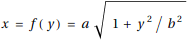と表せ、
2本の漸近線は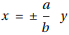である。
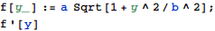
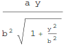
だから、点P(f(p),p)における双曲線の接線の方程式は

これと漸近線との交点は
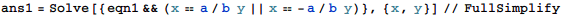
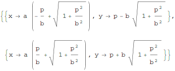
点Q,Rの座標を求める。
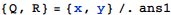
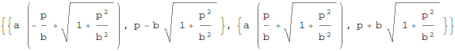
三角形OPQの面積は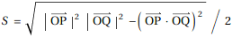だから、
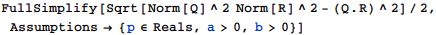
三角形OPQの面積は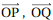について対称だから、点Pと点Qのとり方を入れ替えても同じ結果を得る。
以上より題意は示された。
(2)
(1)より
a,bに与えられた式を代入し、実数tを動かしたとき、Sの最小値、およびそれを与えるtの値は
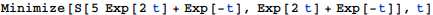
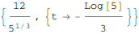
補足・感想
Mathematicaに解かせる練習を始める時に良い練習問題になりそう。